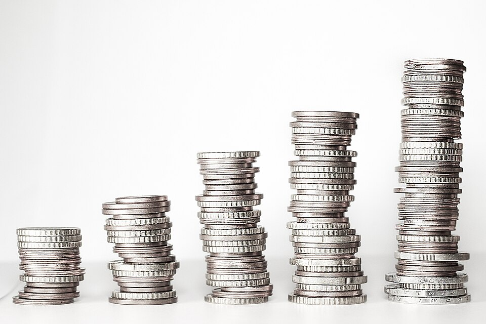
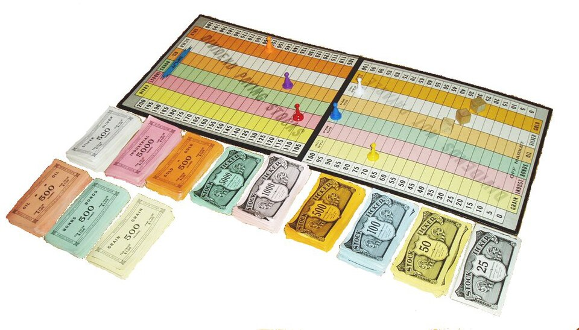

Tài liệu dạy bạn từ con số 0 về đầu tư tài chính tại Việt Nam: vì sao phải đầu tư (lạm phát + lãi kép), thị trường chứng khoán vận hành ra sao, cổ phiếu – trái phiếu – chứng chỉ quỹ khác nhau thế nào, cách đọc bảng giá và đặt lệnh, cách chọn quỹ đầu tư, các chỉ số phân tích cơ bản (P/E, P/B, ROE...), quản trị rủi ro – tâm lý – nhận diện lừa đảo, thuế & phí, và một lộ trình bắt đầu an toàn kèm kế hoạch hành động 30 ngày.
Đây là tài liệu giáo dục, không phải khuyến nghị đầu tư. Mọi tên cổ phiếu/quỹ xuất hiện chỉ để minh họa loại hình, không phải lời khuyên mua/bán. Trước khi đầu tư số tiền lớn, hãy tham khảo chuyên gia tư vấn tài chính có giấy phép. Số liệu quy định (thuế, biên độ, giờ giao dịch...) đúng tại thời điểm 07/2026 và có thể thay đổi — luôn kiểm tra lại nguồn chính thức (mục Nguồn tham khảo ở cuối bài).
- Lần đầu: đọc lướt toàn bộ, tập trung vào các sơ đồ và ví dụ bằng số — chúng được thiết kế để bạn "hình dung được ngay".
- Lần 2–3: đọc kỹ từng phần, đặc biệt các mục 🔬 Deep Dive.
- Trước khi xuống tiền thật: đọc lại Phần 9 (Rủi ro), Phần 10 (Thuế & phí) và Phần 11 (Lộ trình bắt đầu).
1. Vì sao phải đầu tư? — Lạm phát và Lãi kép
1.1. Tiền của bạn đang "bốc hơi" trong im lặng
Trước khi học cách đầu tư, cần hiểu tại sao phải đầu tư. Câu trả lời nằm ở một "kẻ trộm vô hình" tên là lạm phát (inflation) — giá cả hàng hóa tăng dần theo thời gian khiến cùng một số tiền mua được ngày càng ít đồ hơn. Lạm phát Việt Nam thập kỷ qua bình quân quanh mức 3–4%/năm — nhỏ mỗi năm, nhưng cộng dồn thì tàn phá:
| Bạn giữ 100 triệu tiền mặt | Sức mua tương đương (lạm phát 3,5%/năm) |
|---|---|
| Hôm nay | 100 triệu |
| Sau 10 năm | ~70,9 triệu |
| Sau 20 năm | ~50,3 triệu — mất một nửa! |
Lấy 72 chia cho tỷ lệ % mỗi năm, ra số năm để một thứ tăng gấp đôi (hoặc sức mua giảm một nửa). Lạm phát 3,5%/năm → 72 ÷ 3,5 ≈ 20,6 năm để tiền mặt mất nửa sức mua. Đầu tư sinh lời 10%/năm → 72 ÷ 10 = 7,2 năm để tiền nhân đôi.

Kết luận: giữ toàn bộ tiền mặt = chắc chắn thua lạm phát. Gửi tiết kiệm bù được phần lớn lạm phát nhưng khó giàu lên thực chất. Muốn tăng trưởng thực, cần kênh có lợi suất kỳ vọng cao hơn — đó là lý do chứng khoán & quỹ đầu tư tồn tại.
1.2. Lãi kép — "kỳ quan thứ 8 của thế giới"
Lãi kép (compound interest) là khi tiền lãi kiếm được lại tiếp tục sinh lãi. Ví dụ đều đặn đầu tư 5 triệu đồng/tháng (60 triệu/năm):
| Lợi suất bình quân | Sau 10 năm (vốn góp 600tr) | Sau 20 năm (vốn góp 1,2 tỷ) |
|---|---|---|
| 5%/năm (cỡ tiết kiệm) | ~755 triệu | ~1,98 tỷ |
| 10%/năm (cỡ TB dài hạn của cổ phiếu) | ~956 triệu | ~3,44 tỷ |
| 12%/năm | ~1,05 tỷ | ~4,32 tỷ |
Hai bài học: (1) chênh lệch vài % lợi suất/năm → chênh lệch khổng lồ sau 20 năm (1,98 tỷ so với 3,44 tỷ). (2) Thời gian là nguyên liệu quan trọng nhất của lãi kép — bắt đầu sớm 5–10 năm giá trị hơn cả việc chọn được cổ phiếu "thần thánh".
1.3. Đừng đầu tư khi nền móng chưa vững
Sai lầm số 1 của người mới: mang tiền cần dùng trong ngắn hạn đi đầu tư. Chứng khoán có thể giảm 30–50% trong một năm xấu. Sơ đồ dưới mô tả "trạm kiểm soát" cần đi qua trước khi đồng tiền đầu tiên chạm vào thị trường:
Chỉ đầu tư bằng tiền nhàn rỗi dài hạn — số tiền mà nếu "kẹt" 3–5 năm, cuộc sống vẫn không bị ảnh hưởng. Tuyệt đối không vay tiền để đầu tư khi mới bắt đầu.
1.4. So sánh nhanh các kênh đầu tư phổ biến ở Việt Nam
| Kênh | Lợi suất kỳ vọng dài hạn* | Rủi ro | Thanh khoản | Vốn tối thiểu | Cần kiến thức? |
|---|---|---|---|---|---|
| Gửi tiết kiệm | ~4–6%/năm | Rất thấp | Cao | Thấp | Không |
| Trái phiếu chính phủ | ~3–5%/năm | Rất thấp | Trung bình | Trung bình | Ít |
| Trái phiếu doanh nghiệp | ~7–11%/năm | TB–cao (tùy DN) | Thấp–TB | Cao | Nhiều |
| Vàng | Bám lạm phát + biến động mạnh | Trung bình | Cao | Thấp | Ít |
| Cổ phiếu | VN-Index dài hạn ~10–11%/năm, rất trồi sụt | Cao | Cao (T+2) | Rất thấp | Nhiều |
| Chứng chỉ quỹ (mở/ETF) | Bám lớp tài sản quỹ nắm | TB–cao | Cao | Rất thấp | Ít–TB |
| Bất động sản | Tùy chu kỳ, khu vực | TB–cao | Thấp | Rất cao | Nhiều |
* Số liệu mang tính lịch sử/tham khảo, không phải cam kết cho tương lai. VN-Index từng tăng >100% (2006), ~36% (2021), nhưng cũng từng giảm ~66% (2008) và ~33% (2022).
Lợi suất thực ≈ lợi suất danh nghĩa − lạm phát. Gửi tiết kiệm 5%/năm khi lạm phát 3,5% → chỉ giàu lên thực ~1,5%/năm; cổ phiếu 10% trừ lạm phát còn ~6,5%/năm thực. Luôn trừ lạm phát trước khi kết luận "hời hay không".
Điểm khắc cốt ghi tâm: trong đầu tư hợp pháp, lợi nhuận kỳ vọng cao luôn đi kèm rủi ro cao. Ai hứa "lợi nhuận cao + không rủi ro + cam kết chắc chắn" → gần như chắc chắn là lừa đảo (chi tiết Phần 9).
2. Bức tranh lớn: Thị trường tài chính & chứng khoán Việt Nam
2.1. Thị trường chứng khoán sinh ra để làm gì?
Chị Hoa mở quán cà phê đông khách, muốn mở thêm 10 chi nhánh nhưng thiếu 5 tỷ. Chị có 3 lựa chọn: vay ngân hàng; hoặc đi vay của nhiều người, hứa trả lãi — bản chất của trái phiếu; hoặc mời nhiều người góp vốn, chia quyền sở hữu và lợi nhuận — bản chất của cổ phiếu.
Thị trường chứng khoán (TTCK) là cái chợ khổng lồ, có tổ chức và được giám sát: doanh nghiệp đến để huy động vốn, nhà đầu tư đến để cho tiền "đi làm" đổi lấy kỳ vọng lợi nhuận, Nhà nước giám sát để cuộc chơi minh bạch.
2.2. "Bộ máy" thị trường chứng khoán Việt Nam
Hành trình của bạn (nhà đầu tư) kết nối vào thị trường qua những "mắt xích" nào, và ai giám sát toàn bộ cuộc chơi:
| Thành phần | Vai trò | Hình dung đời thường |
|---|---|---|
| CTCK | Mở tài khoản, nhận lệnh, cho vay ký quỹ, tư vấn | "Quầy giao dịch" — không tự chạy vào chợ được, phải qua quầy |
| Sở Giao dịch | Niêm yết, khớp lệnh, công bố thông tin | Ban quản lý chợ + hệ thống loa ghép người mua với người bán |
| VSDC | Ghi sổ ai đang sở hữu gì; đảm bảo "tiền trao – cháo múc" | Kho gửi đồ + trọng tài thanh toán — cổ phiếu ngày nay là bút toán điện tử |
| UBCKNN | Cấp phép, thanh tra, xử phạt thao túng/gian lận | Cảnh sát + tòa án của cái chợ |
Tiền và chứng khoán của bạn được tách bạch và ghi nhận tại VSDC dưới tên bạn — nếu CTCK phá sản, chứng khoán vẫn là của bạn. Khác biệt sống còn so với đưa tiền cho một "app đầu tư" trôi nổi không phép (Phần 9).
2.3. Thị trường sơ cấp vs thứ cấp — tiền chảy đi đâu?
Doanh nghiệp bán chứng khoán lần đầu để lấy vốn — ví dụ qua IPO (Initial Public Offering). Tiền của bạn chảy vào túi doanh nghiệp.
Nơi bạn giao dịch hằng ngày trên app — nhà đầu tư mua bán với nhau. Tiền chảy vào túi một nhà đầu tư khác đang bán ra; doanh nghiệp không nhận thêm đồng nào. Vai trò: tạo thanh khoản (liquidity).
2.4. Ba sàn giao dịch & các chỉ số cần biết
| Sàn | Đặc điểm | Chỉ số đại diện | Biên độ dao động/ngày |
|---|---|---|---|
| HOSE (TP.HCM) | Doanh nghiệp lớn nhất, chuẩn niêm yết cao nhất | VN-Index, VN30 | ±7% |
| HNX (Hà Nội) | Doanh nghiệp vừa; trái phiếu, phái sinh | HNX-Index, HNX30 | ±10% |
| UPCoM | "Sân tập" — chuẩn công bố lỏng hơn, rủi ro cao hơn | UPCoM-Index | ±15% |
VN-Index — "nhiệt kế" nổi tiếng nhất của TTCK Việt Nam: bình quân gia quyền theo vốn hóa của toàn bộ cổ phiếu niêm yết trên HOSE, gốc 100 điểm vào tháng 7/2000. VN30 gồm 30 cổ phiếu vốn hóa và thanh khoản hàng đầu — nhiều ETF mô phỏng theo nó. Vốn hóa = giá cổ phiếu × tổng số cổ phiếu lưu hành.
2.5. Bối cảnh 2025–2026: khúc quanh lịch sử
- Quy mô: vượt mốc 10 triệu tài khoản chứng khoán cuối 2025.
- Hạ tầng: hệ thống giao dịch mới KRX vận hành từ tháng 5/2025.
- Nâng hạng: FTSE Russell nâng hạng TTCK Việt Nam từ Thị trường Cận biên lên Thị trường Mới nổi Thứ cấp, hiệu lực 21/09/2026 — dòng vốn ngoại dự báo lên tới hàng tỷ USD.
Minh họa mang tính khái quát xu hướng kỳ vọng thị trường 2024–2026 gắn với hai mốc sự kiện ở trên — không phải dữ liệu VN-Index chính xác theo phiên giao dịch.
Nâng hạng là câu chuyện dài hạn về chất, không phải "kèo x2 tài khoản trong 3 tháng". Giá cổ phiếu thường đã phản ánh trước một phần kỳ vọng. Người mới cứ học bài bản — cơ hội dài hạn không biến mất chỉ sau một sự kiện.
2.6. Vì sao giá cổ phiếu lên xuống theo lãi suất, tỷ giá và dòng vốn ngoại?
Tin tức tài chính hàng ngày nhắc liên tục đến lãi suất, tỷ giá, khối ngoại mua/bán ròng — nhưng ít khi giải thích rõ chúng nối với giá cổ phiếu qua đường nào. Ba lực chính:
Ngân hàng Nhà nước (NHNN) hạ lãi suất → gửi tiết kiệm kém hấp dẫn hơn, chi phí vay của doanh nghiệp giảm → dòng tiền có xu hướng dịch chuyển sang kênh sinh lời cao hơn như cổ phiếu, định giá (P/E) có xu hướng giãn ra. Lãi suất tăng thì ngược lại — cơ chế song song với rủi ro lãi suất của trái phiếu ở Phần 5, chỉ khác kênh tác động là chi phí cơ hội chứ không phải định giá dòng tiền cố định.
Tỷ giá biến động mạnh khiến nhà đầu tư nước ngoài lo ngại giá trị tài sản quy đổi về USD giảm đi — dù cổ phiếu VN tăng giá tính bằng VND, tính ra USD có thể lỗ. Áp lực này có thể khiến khối ngoại rút vốn, đặc biệt ở các thị trường mới nổi/cận biên như Việt Nam.
Nhà đầu tư nước ngoài giao dịch khối lượng lớn, tập trung vào nhóm vốn hóa lớn (VN30) — mua ròng/bán ròng liên tục nhiều phiên tác động trực tiếp lên cung–cầu và thường được thị trường trong nước theo dõi như một chỉ báo tâm lý. Xem thêm room ngoại ở Phần 6 — khi một mã đã hết room, khối ngoại chuyển hướng sang các ETF room-free.
Lưu ý: đây là các xu hướng được nhiều nhà kinh tế học đồng thuận về hướng tác động, không phải công thức máy móc — độ trễ, cường độ, và đôi khi cả chiều tác động có thể khác nhau tùy bối cảnh cụ thể. Đừng dùng ba yếu tố này để "đoán đỉnh đáy" ngắn hạn; chúng hữu ích hơn để hiểu bối cảnh vĩ mô dài hạn.
3. Chứng khoán là gì? Phân loại 4 nhóm
Chứng khoán (securities) là các loại "giấy tờ có giá" (ngày nay là bút toán điện tử) xác nhận quyền và lợi ích hợp pháp của người sở hữu đối với tài sản hoặc phần vốn của tổ chức phát hành. Nói dân dã: bằng chứng rằng bạn sở hữu một phần công ty, hoặc đang cho ai đó vay tiền, hoặc góp vốn vào một quỹ. Bốn nhóm chính:
Quyền SỞ HỮU một phần công ty. Kiếm tiền từ: cổ tức + chênh lệch giá. Rủi ro: CAO — lời ăn lỗ chịu cùng công ty.
Quyền CHỦ NỢ — bạn cho vay. Kiếm tiền từ: lãi coupon định kỳ + hoàn gốc. Rủi ro: THẤP → CAO tùy người phát hành.
Góp vốn vào quỹ đầu tư. Kiếm tiền từ: tăng trưởng giá trị quỹ (NAV). Rủi ro: tùy quỹ nắm cổ phiếu hay trái phiếu.
Hợp đồng "đặt cược" dựa trên tài sản khác. Đòn bẩy rất cao, có thể mất sạch nhanh. ⚠️ KHÔNG dành cho người mới.
Cách nhớ nhanh bằng câu chuyện quán cà phê chị Hoa ở Phần 2:
| Bạn cầm... | Nghĩa là... | Nếu quán lãi to | Nếu quán phá sản |
|---|---|---|---|
| Cổ phiếu | Bạn là đồng sở hữu quán | Được chia lợi nhuận + vốn góp tăng giá trị | Có thể mất trắng phần vốn góp (chỉ mất tối đa số đã góp — trách nhiệm hữu hạn) |
| Trái phiếu | Bạn là chủ nợ của quán | Chỉ nhận đúng lãi đã cam kết, không hơn | Được ưu tiên trả nợ trước cổ đông |
| Chứng chỉ quỹ | Góp tiền vào "hội đầu tư" thuê chuyên gia mua nhiều quán khác | Hưởng theo kết quả cả rổ | Rủi ro được phân tán ra nhiều quán |
| Phái sinh | Bạn cược về giá tương lai của quán | Thắng đậm nhờ đòn bẩy | Thua đậm cũng nhờ... đòn bẩy ⚠️ |
Tại VN chủ yếu là Hợp đồng tương lai chỉ số VN30: chỉ cần ký quỹ một phần nhỏ giá trị hợp đồng nên đòn bẩy hiệu dụng rất cao — chỉ số biến động vài % là tài khoản có thể biến động vài chục %. Tài liệu này khuyến nghị người mới tránh xa phái sinh ít nhất 1–2 năm đầu — phần còn lại tập trung vào cổ phiếu, trái phiếu và quỹ.
4. Cổ phiếu từ A → Z: bảng giá, lệnh, T+2
4.1. Sở hữu cổ phiếu, bạn có quyền gì?
Khi mua dù chỉ 100 cổ phiếu, bạn chính thức là cổ đông (shareholder) với các quyền: nhận cổ tức (dividend); biểu quyết tại Đại hội đồng cổ đông; mua ưu tiên khi phát hành thêm; và nhận phần tài sản còn lại nếu công ty giải thể (sau khi trả hết chủ nợ). Điểm cực kỳ quan trọng: trách nhiệm hữu hạn (limited liability) — tệ nhất bạn mất số tiền đã bỏ ra mua, không ai siết nhà bạn (trừ khi vay ký quỹ — mục 4.8).
4.2. Hai cách kiếm tiền từ cổ phiếu
1. Lãi vốn (capital gain): mua giá thấp bán giá cao — mua 1.000 CP giá 50.000đ (vốn 50tr), sau 2 năm giá 70.000đ → bán thu 70tr, lãi 20tr (chưa trừ thuế phí — Phần 10). 2. Cổ tức (dividend): dòng tiền đều đặn, không cần bán. Câu nói kinh điển của Benjamin Graham: ngắn hạn thị trường là cỗ máy bỏ phiếu (cảm tính), dài hạn nó là cái cân (đo giá trị thật).
4.3. Mệnh giá vs thị giá — đừng nhầm!
Mệnh giá (par value): tại VN thống nhất 10.000đ — chỉ là con số danh nghĩa (tính vốn điều lệ, cổ tức "tỷ lệ %"). Thị giá (market price): giá giao dịch thực trên sàn, do cung–cầu quyết định.
Công ty công bố "trả cổ tức 15% bằng tiền" — 15% đó tính trên mệnh giá → tức 1.500đ/CP, không phải 15% thị giá.

4.4. Đọc bảng giá: tham chiếu – trần – sàn
| Khái niệm | Ý nghĩa | Màu quy ước |
|---|---|---|
| Giá tham chiếu | Giá đóng cửa phiên trước — mốc so sánh hôm nay | Vàng |
| Giá trần (ceiling) | Cao nhất = tham chiếu × (1 + biên độ) | Tím |
| Giá sàn (floor) | Thấp nhất = tham chiếu × (1 − biên độ) | Xanh lam nhạt |
| Giá tăng so với tham chiếu | — | Xanh lá |
| Giá giảm so với tham chiếu | — | Đỏ |
Ví dụ tính — cổ phiếu ABC trên HOSE (biên độ ±7%), giá tham chiếu 50.000đ: giá trần = 50.000 × 1,07 = 53.500đ; giá sàn = 50.000 × 0,93 = 46.500đ. Biên độ: HOSE ±7%, HNX ±10%, UPCoM ±15% (ngày niêm yết đầu tiên nới rộng: ±20/±30/±40%). Khối lượng (volume) là "chữ ký" của dòng tiền — giá tăng kèm volume lớn đáng tin hơn giá tăng trong im lặng.
4.5. Đơn vị giao dịch, bước giá, giờ giao dịch
Lô chẵn = 100 cổ phiếu (bội số bắt buộc); lô lẻ (1–99 CP) thanh khoản kém hơn. Bước giá HOSE: <10.000đ → bước 10đ; 10.000–<50.000đ → bước 50đ; ≥50.000đ → bước 100đ (HNX/UPCoM: 100đ mọi mức).
| Khung giờ | Phiên | Diễn ra điều gì |
|---|---|---|
| 9h00–9h15 | ATO | Gom lệnh, khớp 1 lần → xác định giá mở cửa |
| 9h15–11h30 | Liên tục sáng | Lệnh khớp ngay khi có đối ứng |
| 11h30–13h00 | Nghỉ trưa | — |
| 13h00–14h30 | Liên tục chiều | — |
| 14h30–14h45 | ATC | Khớp 1 lần → giá đóng cửa = giá tham chiếu ngày mai |
| 14h45–15h00 | Thỏa thuận | Lô lớn mua bán trực tiếp qua sàn |
4.6. Các loại lệnh — người mới chỉ cần nhớ LO
| Lệnh | Cách hoạt động | Khi nào dùng |
|---|---|---|
| LO (Limit Order) | "Mua tối đa giá X / bán tối thiểu giá X" — chỉ khớp ở mức bằng hoặc tốt hơn | ✅ Mặc định cho người mới |
| MP (Market Order) | Khớp ngay bằng mọi giá tốt nhất đang có | Cần khớp gấp — rủi ro trượt giá |
| ATO / ATC | Tham gia phiên khớp định kỳ, chấp nhận giá khớp chung | Muốn mua đúng giá đóng cửa |
Đặt lệnh MP với cổ phiếu vắng người bán có thể khiến bạn mua giá cao hơn hẳn dự tính, vì lệnh "quét" dần lên các mức chào bán cao hơn. Người mới: cứ LO mà dùng.
Mọi lệnh LO chưa khớp xếp hàng trong sổ lệnh (order book). Đây là sổ lệnh thu nhỏ của cổ phiếu ABC tại một khoảnh khắc:
100đ
Khớp theo hai nguyên tắc, đúng thứ tự: (1) ưu tiên giá — mua giá cao hơn / bán giá thấp hơn xếp trước; (2) ưu tiên thời gian — cùng giá, ai đặt trước khớp trước.
Ba tình huống kinh điển từ sổ lệnh trên: đặt LO mua 100 CP giá 50.000 → khớp ngay với 2.000 CP đang chờ bán đúng giá đó. Đặt LO mua giá 49.900 → xếp sau 5.000 CP đã chờ sẵn — "đặt mãi không khớp" không phải lỗi app, mà bạn đứng cuối hàng ở mức giá thị trường chưa chạm tới. Đặt MP mua 10.000 CP → lệnh quét 2.000@50.000 → 4.000@50.100 → 4.000@50.200, giá bình quân ~50.120đ — đó là trượt giá (slippage) bằng số cụ thể.
4.7. Chu kỳ thanh toán T+2
Giao dịch khớp hôm nay nhưng "tiền trao – cháo múc" hoàn tất sau 2 ngày làm việc (T+2). Vòng đời một lệnh mua:
- Đặt lệnh
LO: MUA 100 ABC @ 50.000 - App CTCK chuyển lệnh vào hệ thống khớp lệnh Sàn HOSE
- ✅ Khớp lệnh — App báo khớp, tạm khóa tiền + phí
- Sàn ↔ VSDC đối chiếu, bù trừ nghĩa vụ tiền ↔ chứng khoán
- VSDC chuyển 100 ABC về tài khoản (buổi chiều)
- ✅ Từ PHIÊN CHIỀU ngày T+2 mới có thể bán số cổ phiếu này
Ví dụ: mua thứ Hai → cổ phiếu về chiều thứ Tư, bán được từ phiên chiều thứ Tư. Bán thứ Năm → tiền về chiều thứ Hai tuần sau. Hệ quả: bạn không thể mua sáng bán chiều cùng lô vừa mua — cấu trúc T+2 của TTCK Việt Nam về bản chất không khuyến khích "lướt trong ngày".
Khi công ty chia cổ tức, có một ngày giao dịch không hưởng quyền (ex-dividend date): mua từ ngày này trở đi thì KHÔNG được nhận đợt cổ tức đó, và giá tham chiếu bị điều chỉnh giảm tương ứng.
Ví dụ: ABC giá 50.000đ, trả cổ tức tiền mặt 2.000đ/CP → ngày không hưởng quyền, giá tham chiếu còn 48.000đ. Bạn nhận 2.000đ (còn ~1.900đ sau thuế 5%) nhưng giá vốn thị trường cũng giảm 2.000đ — tổng tài sản không tự nhiên tăng lên. Tương tự, cổ tức bằng cổ phiếu làm số CP tăng nhưng giá điều chỉnh giảm tương ứng — như cắt pizza thành nhiều miếng nhỏ hơn, tổng bánh không đổi.
| Khái niệm | Tiền/CP từ đâu ra | Số CP bạn có | Giá tham chiếu | Tổng giá trị nắm giữ |
|---|---|---|---|---|
| Cổ tức bằng cổ phiếu | Trích từ lợi nhuận giữ lại | Tăng theo tỷ lệ công bố | Giảm tương ứng | Không đổi (tại thời điểm chia) |
| Cổ phiếu thưởng | Trích từ thặng dư vốn/quỹ khác (không phải lợi nhuận) | Tăng theo tỷ lệ công bố | Giảm tương ứng | Không đổi |
| Quyền mua phát hành thêm | Bạn phải nộp thêm tiền để mua CP mới, thường giá ưu đãi | Tăng NẾU bạn thực hiện quyền | Giảm (pha loãng), tính theo giá quyền | = giá trị cũ + tiền mới bạn góp thêm |
| Chia tách cổ phiếu (split) | Không liên quan lợi nhuận — chỉ "cắt nhỏ" đơn vị | Tăng đúng theo tỷ lệ tách (vd 1:2 → gấp đôi) | Giảm đúng theo tỷ lệ tách | Không đổi |
Trừ quyền mua (bạn phải trả thêm tiền thật), không có trường hợp nào ở trên làm bạn giàu lên "miễn phí" — số cổ phiếu tăng luôn đi kèm giá giảm tương ứng, đúng logic "cắt pizza thành nhiều miếng nhỏ hơn" đã học ở trên. Đọc thông báo "chia thưởng tỷ lệ 20%" hay "chia tách 1:2" nên hiểu là thay đổi hình dạng khoản đầu tư, không phải được cho thêm tiền.
4.8. Margin (vay ký quỹ) — con dao hai lưỡi
Giao dịch ký quỹ (margin trading): CTCK cho vay thêm tiền để mua cổ phiếu, dùng chính cổ phiếu làm tài sản đảm bảo. Có 100tr, vay thêm 100tr → mua 200tr cổ phiếu: giá tăng 10% → lãi 20tr trên vốn 100tr = +20%. Giá giảm 10% → lỗ 20tr = −20% vốn; giảm sâu hơn, CTCK call margin, không nộp kịp thì bán giải chấp (force sell) đúng lúc giá thấp nhất.
KHÔNG dùng margin trong ít nhất năm đầu tiên. Phần lớn các vụ "cháy tài khoản" trên thị trường đều có bàn tay của đòn bẩy.
Ví dụ: vốn tự có 100 triệu, vay margin thêm 100 triệu (tỷ lệ ký quỹ ban đầu 50%, đòn bẩy 1:1) → mua 200 triệu cổ phiếu ABC. Khoản nợ vay không đổi khi giá biến động — chỉ giá trị tài sản đảm bảo và vốn chủ sở hữu thay đổi:
| Giá ABC thay đổi | Giá trị TS đảm bảo | Nợ vay margin | Vốn chủ sở hữu | Tỷ lệ ký quỹ thực tế | Trạng thái |
|---|---|---|---|---|---|
| Chưa giảm | 200tr | 100tr | 100tr | 50% | An toàn |
| Giảm 10% | 180tr | 100tr | 80tr | ~44,4% | An toàn |
| Giảm 20% | 160tr | 100tr | 60tr | 37,5% | Cảnh báo sớm |
| Giảm 25% | 150tr | 100tr | 50tr | ~33,3% | 🚨 Gọi ký quỹ (margin call) |
| Giảm 30%, không nộp thêm | 140tr | 100tr | 40tr | ~28,6% | ⚠️ Bán giải chấp (force sell) |
Tỷ lệ ký quỹ ban đầu, tỷ lệ duy trì và ngưỡng gọi ký quỹ cụ thể do từng CTCK quy định khác nhau trong khung của UBCKNN — bảng trên minh họa cơ chế, không phải số chính xác của một CTCK cụ thể. Điểm mấu chốt: với vốn tự có ban đầu chỉ 100 triệu, một cú giảm giá 30% của riêng cổ phiếu ABC — hoàn toàn có thể xảy ra trong vài tuần xấu — khiến CTCK tự động bán cổ phiếu của bạn, thường đúng lúc giá đã thấp, khóa chặt khoản lỗ 60% trên vốn thật (mất 60tr/100tr) trong khi bản thân cổ phiếu mới giảm 30%. Đây chính xác là lý do quy tắc cứng ở trên tồn tại.
5. Trái phiếu: cho vay lấy lãi — nhưng không phải không có rủi ro
5.1. Giải phẫu một trái phiếu
Trái phiếu (bond) = giấy nhận nợ có kỳ hạn. Người phát hành cam kết trả lãi định kỳ và hoàn vốn gốc khi đáo hạn.
| Thuật ngữ | Ý nghĩa | Ví dụ |
|---|---|---|
| Mệnh giá (face value) | Số gốc hoàn trả khi đáo hạn | 100 triệu đ |
| Lãi suất coupon | % lãi trả định kỳ tính trên mệnh giá | 9%/năm → 9tr/năm |
| Kỳ hạn (maturity) | Thời điểm hoàn gốc | 3 năm |
| Tổ chức phát hành | Con nợ của bạn | Chính phủ / Doanh nghiệp X |
Ví dụ trọn gói: mua trái phiếu mệnh giá 100 triệu, coupon 9%/năm, kỳ hạn 3 năm → mỗi năm nhận 9 triệu lãi, cuối năm 3 nhận lại 100 triệu gốc (tổng dòng tiền 127 triệu):
(bỏ vốn mua)
(coupon)
(coupon)
+100tr gốc
Đơn giản, dễ dự đoán — nếu con nợ trả đúng hẹn.
5.2. Hai rủi ro chính của trái phiếu
① Rủi ro tín dụng (credit risk) — trái phiếu chỉ chắc chắn ngang mức độ đáng tin của người phát hành. Trái phiếu Chính phủ: an toàn gần tuyệt đối → lãi suất thấp nhất, "lãi suất phi rủi ro" chuẩn để so sánh. Trái phiếu doanh nghiệp: lãi cao hơn hẳn (7–11%/năm+) = phần bù rủi ro. Lãi càng cao hơn mặt bằng, thị trường càng "định giá" khả năng vỡ nợ càng lớn — không có bữa trưa miễn phí.
② Rủi ro lãi suất (interest rate risk) — giá trái phiếu chạy ngược chiều lãi suất thị trường:
Trái phiếu mới trả lãi cao hơn → giá trái phiếu CŨ GIẢM (coupon cũ kém hấp dẫn, muốn bán phải hạ giá).
Trái phiếu mới trả lãi thấp hơn → giá trái phiếu CŨ TĂNG (coupon cũ thành "hàng hiếm").
Ví dụ: giữ trái phiếu coupon 8%/năm; nếu lãi suất thị trường tăng lên 10%, ai còn muốn mua lại trái phiếu 8% nguyên giá? Phải bán dưới mệnh giá. (Nếu giữ đến đáo hạn và con nợ trả đủ, bạn vẫn nhận đúng dòng tiền cam kết — rủi ro lãi suất chủ yếu "cắn" khi cần bán giữa chừng.)
5.3. Người mới nên tiếp cận trái phiếu như thế nào?
Trái phiếu doanh nghiệp riêng lẻ đòi hỏi kỹ năng thẩm định vượt tầm người mới. Lộ trình hợp lý: (1) coi gửi tiết kiệm + trái phiếu Chính phủ là "phần nền an toàn"; (2) muốn lợi suất nhỉnh hơn → đi qua quỹ trái phiếu (Phần 6); (3) trái phiếu doanh nghiệp phát hành riêng lẻ theo quy định hiện hành chỉ dành cho nhà đầu tư chứng khoán chuyên nghiệp.
2020–2022, nhiều nhà đầu tư mua trái phiếu doanh nghiệp (đặc biệt nhóm bất động sản) qua lời chào "lãi 10–13%/năm, an toàn như gửi tiết kiệm". Năm 2022, các vụ án lớn (Tân Hoàng Minh, Vạn Thịnh Phát...) vỡ ra: hàng chục nghìn trái chủ bị chôn vốn, thị trường đóng băng, quy định phải siết lại.
Bốn bài học: (1) lãi suất cao hơn hẳn mặt bằng = cảnh báo rủi ro, không phải quà tặng; (2) "ngân hàng giới thiệu" ≠ "ngân hàng bảo lãnh thanh toán" — phân biệt bảo lãnh phát hành (chỉ giúp bán) với bảo lãnh thanh toán (cam kết trả nợ thay); (3) luôn hỏi tiền huy động dùng làm gì, trả nợ bằng nguồn nào, tài sản đảm bảo là gì; (4) đừng dồn tiền vào một tổ chức phát hành.
YTM (Yield to Maturity) trả lời: "nếu mua ở giá thị trường hôm nay và giữ đến đáo hạn, mỗi năm tôi thực lời bao nhiêu %?" — gộp cả coupon lẫn chênh lệch giá mua/mệnh giá. Ví dụ: trái phiếu mệnh giá 100tr, coupon 8%, còn 1 năm đáo hạn, đang bán 98tr → sau 1 năm nhận 108tr trên vốn 98tr → YTM ≈ (108−98)/98 ≈ 10,2%, cao hơn hẳn coupon 8%. Khi so sánh trái phiếu, luôn so YTM, đừng so coupon.
6. Quỹ đầu tư & Chứng chỉ quỹ: "thuê chuyên gia" đầu tư hộ
6.1. Vấn đề quỹ đầu tư giải quyết
Tự đầu tư cổ phiếu đòi hỏi 3 thứ người mới thường thiếu: kiến thức, thời gian, và vốn đủ lớn để đa dạng hóa. Quỹ đầu tư (investment fund) giải cả 3: nhiều người góp tiền vào một "rổ chung", thuê công ty quản lý quỹ chuyên nghiệp vận hành, mỗi người nắm chứng chỉ quỹ (CCQ) đại diện phần góp. Với vài trăm nghìn đồng mua CCQ, bạn đã gián tiếp sở hữu danh mục vài chục cổ phiếu/trái phiếu — mức đa dạng hóa mà tự mua lẻ cần cả trăm triệu mới đạt được.
6.2. Cấu trúc an toàn của một quỹ
Điểm khiến quỹ được cấp phép khác hẳn "app ủy thác" trôi nổi: người ra quyết định đầu tư và người giữ tài sản là hai tổ chức tách biệt, giám sát chéo lẫn nhau.
Quỹ và công ty quản lý quỹ có tên trong danh sách được UBCKNN cấp phép (tra tại ssc.gov.vn)? Có ngân hàng giám sát rõ ràng? Có công bố báo cáo NAV định kỳ? Thiếu một trong ba → không phải quỹ hợp pháp, đó là hụi/ủy thác rủi ro cao (Phần 9).
6.3. NAV — "giá" của một chứng chỉ quỹ
NAV (Net Asset Value) = tổng tài sản của quỹ trừ nợ phải trả. Chia cho số CCQ lưu hành ra NAV/CCQ. Ví dụ: Quỹ X tổng tài sản 1.020 tỷ, nợ 20 tỷ → NAV = 1.000 tỷ; đang lưu hành 50 triệu CCQ → NAV/CCQ = 20.000đ. Bạn đầu tư 100tr → nhận 5.000 CCQ. Một năm sau NAV/CCQ = 23.000đ → tài sản của bạn = 5.000 × 23.000 = 115 triệu (+15%).
6.4. Ba "hình dạng" quỹ phổ biến
| Tiêu chí | Quỹ mở | Quỹ đóng | ETF |
|---|---|---|---|
| Mua/bán ở đâu | Trực tiếp với quỹ (app CTCK, Fmarket...) | Trên sàn như cổ phiếu | Trên sàn, theo lô 100 |
| Giá giao dịch | Đúng theo NAV kỳ định giá | Giá thị trường, có thể lệch xa NAV | Giá thị trường nhưng bám sát NAV |
| Phát hành thêm CCQ khi bạn mua? | Có (co giãn) | Không (cố định sau IPO) | Có (hoán đổi) |
| Chiến lược điển hình | Chủ động | Chủ động | Thụ động — mô phỏng chỉ số |
| Phí quản lý điển hình | ~1–2%/năm | ~1–2%/năm | Thấp hơn hẳn, <~0,8%/năm |
Đội chuyên gia chọn lọc cổ phiếu để thắng chỉ số tham chiếu. Phí cao hơn, không phải quỹ nào cũng thắng chỉ số bền bỉ.
Không cố thông minh hơn thị trường — mô phỏng đúng một chỉ số. Phí rẻ, minh bạch, "mua cả thị trường trong một mã". Thống kê dài hạn: phần lớn quỹ chủ động không thắng nổi chỉ số sau phí — ETF chi phí thấp là điểm khởi đầu hợp lý cho người mới.
| Ví dụ thực tế tại VN* | Loại | Mua ở đâu? |
|---|---|---|
| E1VFVN30 (ETF VFMVN30) | ETF — mô phỏng chỉ số VN30 | Trên sàn HOSE qua CTCK, giống hệt mua một mã cổ phiếu, gõ mã E1VFVN30 |
| FUEVFVND (ETF DCVFMVN DIAMOND) | ETF — mô phỏng rổ Diamond (ngành đã hết room ngoại) | Trên sàn HOSE, mã FUEVFVND |
| FUESSVFL (ETF SSIAM VNFIN LEAD) | ETF — rổ cổ phiếu tài chính dẫn đầu | Trên sàn HOSE, mã FUESSVFL |
| Quỹ mở của các công ty QLQ (VD: VCBF, DCDS...) | Quỹ mở chủ động | Không giao dịch trên sàn — mua/bán trực tiếp qua công ty quản lý quỹ hoặc đại lý phân phối (app Fmarket, TCBS iWealth...) |
* Tên quỹ/mã ETF nêu trên để minh họa cách phân loại — không phải khuyến nghị đầu tư. Mã và công ty quản lý có thể thay đổi; luôn kiểm tra lại thông tin chính thức trên trang HOSE hoặc trang công ty quản lý quỹ trước khi giao dịch.
Room ngoại (foreign ownership limit) là tỷ lệ tối đa cổ phần một doanh nghiệp niêm yết được phép bán cho nhà đầu tư nước ngoài, theo quy định pháp luật hoặc điều lệ công ty. Đa số doanh nghiệp room ngoại 100%; một số ngành có điều kiện (ngân hàng, viễn thông, hàng không...) bị giới hạn thấp hơn — có mã room ngoại chỉ 15–30%. Khi khối ngoại đã mua kín room, họ không thể mua thêm cổ phiếu đó trên sàn dù muốn, dù còn tiền. Đây là lý do các ETF "room-free" như FUEVFVND (rổ Diamond) ra đời: gom sẵn các mã đã hết room ngoại vào một chứng chỉ quỹ mà nhà đầu tư nước ngoài vẫn mua bán bình thường.
ETF: mở app CTCK bạn đang dùng (SSI, VPS, TCBS...), tìm đúng mã (vd. E1VFVN30), đặt lệnh y hệt mua cổ phiếu thường — theo lô 100, khớp lệnh trong giờ giao dịch, giá thay đổi liên tục trong phiên. Quỹ mở: không có "mã" để gõ vào bảng giá — bạn mở tài khoản giao dịch chứng chỉ quỹ tại chính công ty quản lý quỹ hoặc qua nền tảng phân phối (Fmarket, TCBS iWealth...), lệnh mua/bán khớp theo NAV cuối ngày, không phải giá thị trường theo thời gian thực.
6.5. Phí của quỹ — kẻ gặm nhấm thầm lặng
Phí quản lý (~1–2%/năm với quỹ cổ phiếu chủ động — trừ thẳng vào NAV nên "không thấy đau"), phí mua (nhiều quỹ mở hiện miễn), phí bán (0–2%, giảm dần theo thời gian nắm giữ — khuyến khích đầu tư dài hạn).
Hai quỹ cùng đạt lợi suất gộp 12%/năm, chỉ khác tổng phí: quỹ A phí 0,5%/năm (ròng 11,5%), quỹ B phí 2%/năm (ròng 10%). Bỏ 100 triệu, giữ 20 năm:
Chênh lệch ~209 triệu — chỉ vì 1,5% phí/năm, bị lãi kép "phóng đại" thành khác biệt khổng lồ. Bài học: phí là một trong số rất ít thứ bạn kiểm soát chắc chắn được — hãy xem nó kỹ như xem lợi nhuận quá khứ.
ETF có cơ chế hoán đổi (creation/redemption) với các tổ chức lớn (Authorized Participant): họ mang rổ cổ phiếu đúng cơ cấu chỉ số đổi lấy CCQ ETF, hoặc ngược lại. Nếu giá ETF trên sàn cao hơn NAV, các tổ chức này lập tức tạo thêm CCQ để ăn chênh lệch (arbitrage) — hành động đó tự động kéo giá về sát NAV. Kết quả: nhà đầu tư nhỏ lẻ được hưởng sản phẩm linh hoạt như cổ phiếu nhưng giá luôn "neo" vào giá trị thật của rổ tài sản.
6.6. DCA — chiến lược trung bình giá
DCA (Dollar-Cost Averaging): đầu tư một số tiền cố định, đều đặn theo chu kỳ, bất kể thị trường tăng hay giảm — tự động mua nhiều đơn vị hơn khi giá rẻ, ít hơn khi giá đắt. Ví dụ DCA 2 triệu/tháng:
| Tháng | Giá CCQ | Số CCQ mua được |
|---|---|---|
| 1 | 20.000đ | 100 |
| 2 | 16.000đ (thị trường giảm 😱) | 125 |
| 3 | 25.000đ | 80 |
| Tổng | Giá TB cộng: 20.333đ | 305 CCQ, vốn 6tr → giá vốn thực: 19.672đ/CCQ |
Giá vốn thực (19.672đ) thấp hơn trung bình cộng của giá (20.333đ) — "phép màu" cơ học của DCA. Quan trọng hơn: DCA loại bỏ nhu cầu đoán đỉnh–đáy và biến cú giảm thành "đợt khuyến mãi gom hàng". Hầu hết nền tảng đều có SIP (đầu tư định kỳ tự động) — hãy bật nó lên để kỷ luật thay bạn làm việc.
DCA lo phần mua vào, nhưng danh mục còn cần bảo trì định kỳ. Ví dụ: bạn đặt mục tiêu 70% cổ phiếu / 30% trái phiếu. Sau một năm cổ phiếu tăng mạnh, tỷ lệ thực tế trôi thành 80/20 — danh mục của bạn giờ rủi ro hơn dự tính ban đầu mà bạn không hề "quyết định" điều đó, thị trường tự làm thay bạn. Tái cân bằng: bán bớt phần đã vượt tỷ trọng (cổ phiếu), mua thêm phần đang thiếu (trái phiếu) để đưa danh mục về đúng 70/30 mục tiêu. Tần suất hợp lý cho người mới: 6–12 tháng/lần — làm quá thường xuyên chỉ tốn thêm phí giao dịch mà không cải thiện đáng kể kết quả.
6.7. Tự chọn cổ phiếu hay mua quỹ? — Cây quyết định
Lưu ý: chọn quỹ không phải phương án "hạng hai" — với đa số người bận rộn, đó là phương án tối ưu.
Một số cái tên để bạn tự tìm hiểu thêm (chỉ minh họa, không phải khuyến nghị): ETF nội như E1VFVN30, FUEVFVND; quỹ mở cổ phiếu như DCDS, VESAF, SSI-SCA, VCBF-BCF; quỹ mở trái phiếu như TCBF, DCBF. Khi so sánh, nhìn: chiến lược, hiệu suất 3–5 năm so với chỉ số, tổng chi phí, quy mô quỹ và uy tín công ty quản lý.
7. Phân tích cơ bản: đọc sức khỏe doanh nghiệp qua con số
Phân tích cơ bản (fundamental analysis) trả lời hai câu hỏi: doanh nghiệp này có TỐT không? và giá hiện tại có RẺ so với giá trị thật không? Một công ty tốt mua ở giá quá đắt vẫn là khoản đầu tư tồi.
7.1. Ba báo cáo tài chính
| Báo cáo | Trả lời câu hỏi | Ví như |
|---|---|---|
| Bảng cân đối kế toán | Đang có gì (tài sản) và nợ ai bao nhiêu? Phần dôi ra = vốn chủ sở hữu | Chụp X-quang khối tài sản tại một thời điểm |
| Báo cáo kết quả kinh doanh | Kỳ vừa rồi kiếm/tiêu/lãi bao nhiêu? | Bảng lương – chi tiêu cả năm |
| Báo cáo lưu chuyển tiền tệ | Tiền mặt thật ra–vào thế nào? | Sao kê tài khoản ngân hàng |
Lợi nhuận kế toán có thể "đẹp trên giấy" (bán chịu chưa thu tiền), nhưng tiền mặt thì khó nói dối. Doanh nghiệp lãi lớn nhiều năm nhưng dòng tiền kinh doanh liên tục âm là lá cờ đỏ kinh điển.
7.2. Bộ chỉ số "vỡ lòng" — ví dụ xuyên suốt
Công ty ABC: lợi nhuận sau thuế 500 tỷ/năm; 100 triệu cổ phiếu lưu hành; vốn chủ sở hữu 3.000 tỷ; tổng nợ 2.400 tỷ; giá thị trường 60.000đ/CP; cổ tức tiền mặt 3.000đ/CP/năm.
| Chỉ số | Công thức | Tính cho ABC | Cách đọc |
|---|---|---|---|
| EPS | LN sau thuế ÷ số CP | 500 tỷ ÷ 100 triệu = 5.000đ | Mỗi CP "làm ra" 5.000đ lợi nhuận/năm |
| P/E | Giá ÷ EPS | 60.000 ÷ 5.000 = 12 | Trả 12 đồng cho mỗi 1 đồng lợi nhuận/năm; ~12 năm "hoàn vốn" nếu LN đứng yên |
| BVPS | Vốn CSH ÷ số CP | 3.000 tỷ ÷ 100tr = 30.000đ | Tài sản ròng ứng với mỗi CP |
| P/B | Giá ÷ BVPS | 60.000 ÷ 30.000 = 2 | Thị trường trả gấp 2 lần giá trị sổ sách |
| ROE | LN sau thuế ÷ vốn CSH | 500 ÷ 3.000 = 16,7% | Mỗi 100đ vốn cổ đông tạo 16,7đ lãi/năm — "tay nghề" ban lãnh đạo |
| Tỷ suất cổ tức | Cổ tức ÷ giá | 3.000 ÷ 60.000 = 5% | Dòng tiền "như gửi tiết kiệm" trên giá mua |
| D/E | Tổng nợ ÷ vốn CSH | 2.400 ÷ 3.000 = 0,8 | Càng cao càng rủi ro — luôn so trong cùng ngành |
Cách dùng đúng: (1) so trong cùng ngành — P/E 12 đắt với ngành thép chu kỳ nhưng có thể rẻ với công nghệ tăng trưởng; (2) so với chính lịch sử của doanh nghiệp; (3) nhìn xu hướng nhiều năm, không nhìn một quý; (4) không chỉ số nào đứng một mình đủ để ra quyết định — chúng là bộ câu hỏi mở đầu, không phải câu trả lời cuối cùng.
1. Bẫy lợi nhuận đột biến: E phình to nhờ khoản bất thường (bán đất, hoàn nhập dự phòng) khiến P/E trông thấp — năm sau khoản đó biến mất, P/E "thật" cao vọt. 2. Bẫy đỉnh chu kỳ: với ngành chu kỳ (thép, phân bón, vận tải biển), P/E thấp nhất thường xuất hiện ngay đỉnh lợi nhuận — gần đỉnh giá. 3. Bẫy giá trị (value trap): doanh nghiệp trong ngành đang chết dần — P/E thấp năm này qua năm khác vì triển vọng thực sự tệ, rẻ mãi vẫn hoàn rẻ.
Bài học chung: giá phản ánh kỳ vọng tương lai, còn E trong P/E là quá khứ. Câu hỏi đúng luôn là "lợi nhuận sắp tới sẽ ra sao?".
7.3. Phân tích định tính — những câu hỏi số liệu không trả lời được
Tỷ số ở mục 7.2 cho biết doanh nghiệp đã làm ăn ra sao trong quá khứ. Chúng không trả lời được: doanh nghiệp có giữ được vị thế đó trong 5–10 năm tới không? Bốn nhóm câu hỏi định tính sau bổ sung phần con số bỏ sót — dùng song song với 7.2, không thay thế:
- Lợi thế cạnh tranh (moat): Vì sao khách hàng chọn doanh nghiệp này thay vì đối thủ? Lợi thế đó có dễ bị sao chép không (thương hiệu, chi phí thấp, mạng lưới, chi phí chuyển đổi cao)?
- Ban lãnh đạo: Đội ngũ điều hành có lịch sử thực hiện đúng cam kết với cổ đông không? Có giao dịch với bên liên quan (người nhà, công ty "sân sau") đáng ngờ trong BCTC không?
- Vị thế ngành: Ngành đang tăng trưởng, chững lại, hay suy thoái? Doanh nghiệp đứng ở đâu trong chuỗi giá trị — có phụ thuộc quá nhiều vào một khách hàng/nhà cung cấp không?
- Tính minh bạch: BCTC có được kiểm toán bởi công ty uy tín không? Doanh nghiệp có lịch sử bị UBCKNN xử phạt vi phạm công bố thông tin không?
Không có câu trả lời "điểm số" cho bốn câu hỏi này như P/E hay ROE — đây là lý do phân tích cơ bản luôn cần phán đoán, không chỉ phép tính. Một doanh nghiệp vượt qua cả bộ lọc định lượng (7.2) lẫn định tính (7.3) mới là ứng viên đáng nghiên cứu sâu hơn.
8. Phân tích kỹ thuật: nến, chỉ báo, Fibonacci (và lời cảnh báo)
Phân tích kỹ thuật (PTKT) nghiên cứu đồ thị giá/khối lượng quá khứ để phán đoán xu hướng. Nếu phân tích cơ bản hỏi "mua CÁI GÌ?" thì PTKT hỏi "mua/bán KHI NÀO?"

8.1. Bốn khái niệm nền
Nến Nhật (candlestick): mỗi cây nến tóm tắt một phiên bằng 4 giá — mở cửa, cao nhất, thấp nhất, đóng cửa.
Khối lượng (volume): "cường độ dòng tiền" — giá tăng kèm volume lớn đáng tin hơn giá tăng trong im lặng. Đường trung bình động (MA): trung bình giá N phiên (MA20≈1 tháng, MA50, MA200≈1 năm) để "lọc nhiễu". Hỗ trợ/kháng cự: vùng giá nơi lực mua/bán từng nhiều lần xuất hiện — "vùng ký ức" tâm lý đám đông.
8.2. Loại biểu đồ & khung thời gian
Biểu đồ đường nối các giá đóng cửa — sạch mắt, hợp nhìn xu hướng dài; biểu đồ nến cho đủ 4 giá — mặc định của dân phân tích. Khung thời gian: nến ngày (D1) là chuẩn cho nhà đầu tư; nến tuần (W1) nhìn xu hướng lớn; khung phút/giờ là sân của trader lướt sóng. Quy luật: khung càng nhỏ, tín hiệu càng nhiễu.
Nến D1 + cột volume bên dưới + đường MA20 và MA200. Màn hình càng nhiều chỉ báo chồng chéo, quyết định càng loạn (mục 8.6).
8.3. Các mô hình nến kinh điển
Ba nguyên tắc đọc mô hình nến các khóa học "3 ngày thành trader" thường lờ đi: (1) bối cảnh quyết định ý nghĩa — cây búa chỉ đáng chú ý sau nhịp giảm, tại vùng hỗ trợ; (2) volume là chữ ký xác nhận; (3) xác suất, không phải chắc chắn — mô hình nến chỉ nghiêng xác suất vài chục %, không bao giờ 100%.
8.4. Fibonacci — từ dãy số đến các mức thoái lui
Dãy Fibonacci: 1, 1, 2, 3, 5, 8, 13, 21, 34... (mỗi số = tổng hai số liền trước); tỷ lệ hai số liên tiếp tiến dần về 1,618 ("tỷ lệ vàng"). Cách dễ hình dung nhất: xếp các hình vuông có cạnh bằng từng số trong dãy sát cạnh nhau, rồi vẽ một cung phần tư bên trong mỗi ô — ta được đường xoắn ốc vàng kinh điển:
Hai ô nhỏ nhất đều có cạnh = 1. Ghép các ô liền kề nhau theo đúng thứ tự Fibonacci rồi nối các cung phần tư, tỷ lệ cạnh của hai hình vuông liên tiếp (vd. 8:13) càng lớn càng tiến sát 1,618 — đây là gốc gác của mọi mức Fibonacci dùng trong phân tích kỹ thuật.
Công cụ phổ biến nhất ứng dụng tỷ lệ vàng vào biểu đồ giá: Fibonacci thoái lui (retracement) — "sau một nhịp tăng mạnh, giá thường điều chỉnh về đâu trước khi đi tiếp?"
Nhịp tăng 50.000 → 100.000đ; thoái lui 38,2% = 100.000 − 0,382 × 50.000 = 80.900đ. Các mức 23,6–38,2–50–61,8% là những "bậc thang" hỗ trợ tiềm năng, trong đó 61,8% là "mức vàng" được theo dõi nhiều nhất.
Người mới chỉ cần biết retracement là đủ. Mức 50% thực ra không thuộc dãy Fibonacci — thêm vào theo thói quen quan sát. Vì sao đôi khi "linh nghiệm"? Một phần là lời tiên tri tự ứng nghiệm: hàng triệu trader cùng kẻ cùng mức đó, cùng đặt lệnh quanh đó → vùng giá có phản ứng thật. Coi các mức Fibonacci như "vùng đáng chú ý" để quan sát phản ứng giá + volume, tuyệt đối không phải mức "chắc chắn bật lên".
8.5. Ba chỉ báo bạn sẽ thấy trên mọi app
| Chỉ báo | Nó đo cái gì | Cách đọc phổ biến | Cái bẫy cần biết |
|---|---|---|---|
| RSI | "Độ nóng" đà tăng/giảm, thang 0–100 (14 phiên) | >70: quá mua; <30: quá bán | Trong xu hướng mạnh, RSI có thể nằm lì >70 hàng tuần mà giá vẫn tăng — không phải lệnh bán tự động |
| MACD | Động lượng, khoảng cách EMA 12 & 26 + đường tín hiệu EMA 9 | Cắt lên: tích cực; cắt xuống: ngược lại | Chỉ báo trễ — tín hiệu thường đến sau khi giá đã chạy một đoạn |
| Bollinger Bands | "Độ căng" của giá: dải giữa MA20, ±2 độ lệch chuẩn | Bám dải trên: mạnh nhưng căng; bóp hẹp: sắp bung mạnh | Chạm dải trên/dưới không tự động là đảo chiều |
Mọi chỉ báo đều được tính ra từ chính giá và volume quá khứ — chồng 10 chỉ báo không tạo thêm thông tin mới, chỉ tạo thêm tiếng ồn. Tối đa 2–3 chỉ báo, và phải hiểu công thức đằng sau từng cái mình dùng.
8.6. Thực hành thực tế — lộ trình luyện tay nghề không tốn học phí
- Mở biểu đồ nến D1 trên app CTCK (TradingView miễn phí cũng đủ dùng)
- Chọn 5 CP trong VN30: kẻ 2 vùng hỗ trợ/kháng cự, đánh dấu 3 mô hình nến trong 6 tháng, kẻ thử một Fibonacci retracement
- Xem điều gì thực sự xảy ra sau đó — tự thấy tỷ lệ "linh nghiệm" khiêm tốn thế nào
- Lập sổ (Excel): ngày, mã, lý do vào lệnh, giá vào, mức dừng lỗ viết trước, mục tiêu, kết quả sau 2–4 tuần
- "Giao dịch" 10–20 lệnh giả định rồi tổng kết tỷ lệ đúng — dữ liệu thật về chính bạn
- Chỉ sau khi sổ giấy cho kết quả ổn định, thử vị thế rất nhỏ (≤5% phần danh mục "học tập")
- Kỷ luật sắt: mọi lệnh có lý do + mức dừng lỗ viết trước; khớp xong chép vào nhật ký (mục 9.3)
1. PTKT là công cụ xác suất, không phải quả cầu tiên tri — không tồn tại chỉ báo "chén thánh". 2. Người mới lạm dụng PTKT dễ trượt vào giao dịch quá độ (overtrading) — phí + thuế + trượt giá ăn mòn tài khoản (Phần 10), và cấu trúc T+2 của TTCK VN cũng chống lại lối chơi này. 3. Nền tảng ra quyết định nên là phân tích cơ bản + phân bổ tài sản + DCA; PTKT (nếu dùng) chỉ đóng vai trò phụ trợ chọn thời điểm, sau khi đã vững phần gốc.
9. Rủi ro, tâm lý đầu tư & nhận diện lừa đảo
Đây là phần quan trọng nhất của toàn bộ tài liệu. Kiến thức trước đó giúp bạn kiếm tiền; phần này giúp bạn không mất tiền oan — trong đầu tư, tránh thua lỗ lớn còn quan trọng hơn tìm thương vụ lãi lớn. Lý do: lỗ và gỡ không "cân" nhau:
Vượt khung biểu đồ: lỗ 70% cần lãi +233% để về bờ; lỗ 90% cần lãi +900% — phải nhân đôi tài khoản gần 10 lần. Càng lỗ sâu, con dốc phải leo để "về bờ" càng dựng đứng theo cấp số — vì bạn phải gỡ trên phần vốn đã teo lại. Toàn bộ Phần 9 xoay quanh một mục tiêu: chặn những khoản lỗ lớn trước khi chúng xảy ra.
9.1. Bản đồ rủi ro
| Loại rủi ro | Bản chất | Ví dụ | Cách phòng thủ chính |
|---|---|---|---|
| Thị trường (hệ thống) | Cả thị trường cùng giảm, không chừa ai | VN-Index −66% (2008), −33% (2022) | Đầu tư dài hạn, DCA, không dùng tiền sắp cần |
| Doanh nghiệp (cá biệt) | Một công ty gặp vấn đề: thua lỗ, gian lận, hủy niêm yết | CP riêng lẻ có thể mất 80–100% giá trị | Đa dạng hóa — không all-in một mã |
| Thanh khoản | Muốn bán nhưng không ai mua | CP nhỏ UPCoM, trái phiếu riêng lẻ | Ưu tiên tài sản thanh khoản cao khi mới bắt đầu |
| Lãi suất | Lãi suất tăng → giá trái phiếu giảm | Đã học ở Phần 5 | Hiểu chu kỳ, phân bổ nhiều loại tài sản |
| Lạm phát | Lợi nhuận danh nghĩa dương nhưng sức mua vẫn giảm | Tiết kiệm 4% khi lạm phát 4,5% | Có tỷ trọng tài sản tăng trưởng (CP/quỹ) |
| Đòn bẩy (margin) | Vay tiền đầu tư → lỗ khuếch đại, có thể bị bán giải chấp | Giảm 20% với margin 1:1 → mất ~40% vốn thật | Năm đầu: không margin. Chấm hết. |
| Chính mình | Cảm xúc phá hỏng kế hoạch: FOMO, hoảng loạn, gồng lỗ | Mua đỉnh bán đáy — lỗi phổ biến nhất | Mục 9.3 dành riêng cho "kẻ thù" này |
9.2. Đa dạng hóa — "đừng bỏ hết trứng vào một giỏ"
Đa dạng hóa (diversification) giảm mạnh rủi ro cá biệt mà không nhất thiết giảm lợi nhuận kỳ vọng, theo ba chiều: theo loại tài sản (cổ phiếu + trái phiếu/quỹ + tiền gửi); theo ngành & số lượng mã (tối thiểu 5–10 mã khác ngành, hoặc 1 CCQ/ETF = tự động 30–50+ mã); theo thời gian (DCA thay vì dồn một cục).
Ví dụ minh họa cấu trúc danh mục cho người trẻ mới bắt đầu, chấp nhận rủi ro trung bình — không phải khuyến nghị, tỷ lệ cụ thể do bạn quyết định theo hoàn cảnh:
Logic: phần lõi (quỹ/ETF) tăng trưởng dài hạn ít tốn công; phần cổ phiếu tự chọn để bạn học với quy mô đủ nhỏ để sai lầm không chí mạng; trái phiếu/tiết kiệm là "giảm xóc"; tiền mặt cho bạn quyền chủ động khi thị trường hoảng loạn — thay vì là người phải bán, bạn là người được mua rẻ.
Không có luật bắt buộc, nhưng khung tham khảo phổ biến cho phần danh mục cổ phiếu tự chọn: tối đa ~10–15% NAV cho MỘT mã (đúng con số đã nêu ở mục "bộ giáp chống lại chính mình" bên dưới), tối đa ~30–40% cho MỘT ngành. Nếu một mã vượt quá tỷ trọng mục tiêu chỉ vì nó tăng giá mạnh — đó là tín hiệu để chốt lời một phần, đưa danh mục về đúng khung, không phải để tự hào "all-in đúng hàng". Quy tắc này biến "đa dạng hóa" từ một ý tưởng mơ hồ thành một con số bạn có thể tự kiểm tra sau mỗi lần mua.
9.3. Tâm lý đầu tư — kẻ thù lớn nhất ở trong gương
Với đa số nhà đầu tư cá nhân, thứ gây lỗ nhiều nhất không phải chọn sai cổ phiếu, mà là hành vi của chính họ. Cảm xúc của đám đông vận động theo một chu kỳ lặp đi lặp lại:
DCA đều đặn theo kế hoạch — KHÔNG mua đuổi ở đỉnh (C), KHÔNG bán tháo ở đáy (E). Nghịch lý cốt lõi: cảm giác an toàn nhất (đỉnh) chính là lúc nguy hiểm nhất, cảm giác đáng sợ nhất (đáy) lại là lúc an toàn nhất. Trực giác của bạn — tiến hóa để chạy theo bầy đàn — sẽ liên tục xúi bạn làm điều ngược với lợi ích tài chính.
Bốn "con quỷ" tâm lý có tên tuổi: FOMO (sợ bỏ lỡ — mua vội không phân tích, thường ở giai đoạn B–C); ác cảm mất mát (nỗi đau khi mất 1 đồng mạnh gần gấp đôi niềm vui khi được 1 đồng); hiệu ứng ngược chiều (bán vội mã đang lãi, ôm chặt mã đang lỗ — cắt cây khỏe, tưới cây bệnh); neo tâm lý (bám vào giá vốn của mình như mốc thiêng — trong khi thị trường không biết và không quan tâm bạn đã mua giá nào).
Bộ giáp chống lại chính mình: (1) viết kế hoạch TRƯỚC khi mua; (2) tự động hóa DCA; (3) giới hạn tỷ trọng (một mã ≤10–15% danh mục); (4) nhật ký giao dịch — sau 6–12 tháng đọc lại, bạn sẽ nhìn thấy lỗi tâm lý của chính mình.
Một thống kê kinh điển trong tài chính hành vi (thường trích dẫn từ dữ liệu chỉ số chứng khoán Mỹ dài hạn, nhưng cơ chế toán học áp dụng cho mọi thị trường bao gồm VN-Index): nếu bạn giữ khoản đầu tư suốt một giai đoạn dài (vd. 20 năm), bạn nhận trọn lợi suất thị trường trong giai đoạn đó. Nhưng nếu chỉ vì "đoán sai thời điểm" mà đứng ngoài đúng 10 phiên tăng mạnh nhất trong hàng nghìn phiên của giai đoạn đó, lợi suất tích lũy có thể giảm còn chưa bằng một nửa. Trớ trêu hơn: phần lớn những phiên tăng mạnh nhất lại rơi ngay sau những phiên giảm mạnh nhất — đúng lúc nhà đầu tư hoảng loạn (giai đoạn E ở trên) đang rút tiền ra. Đây là lý do "ở trong thị trường" (time in the market) thường thắng "đoán đúng thời điểm vào/ra" (timing the market) về mặt thống kê dài hạn.
9.4. Nhận diện lừa đảo đầu tư — bộ lọc 3 câu hỏi
Song song thị trường hợp pháp là một "chợ đen" lừa đảo nhắm thẳng vào người mới. Bộ lọc nhanh cho mọi lời mời đầu tư trước khi mất một đồng nào:
Ba nguyên tắc vàng: (1) lợi nhuận cam kết cao = còi báo động, không phải cơ hội — ai "cam kết" 3%/tháng (≈42%/năm) đều đặn nghĩa là giỏi hơn mọi quỹ đầu tư hàng đầu thế giới, và lại đi mời... bạn? Đó là toán học của mô hình Ponzi. (2) dòng tiền hợp pháp có dấu vết — bạn nộp tiền vào TK chứng khoán đứng tên chính bạn tại CTCK được UBCKNN cấp phép. (3) giấy phép kiểm tra được trong 2 phút trên ssc.gov.vn — không có tên = không chuyển tiền, miễn tranh luận.
Kẻ lừa đảo ngày nay giả mạo cả thương hiệu lớn — app/website nhái tên CTCK, công ty quỹ uy tín, thậm chí ảnh lãnh đạo thật (cắt ghép, deepfake). Đừng tin tên gọi; hãy kiểm tra kênh chính thức: tải app từ đúng trang chủ/kho ứng dụng chính thống, gọi lại tổng đài công bố trên website chính thức.
10. Thuế & chi phí khi đầu tư (cập nhật Luật Thuế TNCN 2025)
Chi phí là thứ chắc chắn xảy ra (khác với lợi nhuận chỉ là kỳ vọng), và như Deep Dive Phần 6 đã cho thấy, chênh lệch chi phí nhỏ tích lũy thành khoản khổng lồ sau nhiều năm.
Thuế TNCN với đầu tư chứng khoán theo Luật Thuế TNCN (sửa đổi) số 109/2025/QH15 — hiệu lực từ 01/07/2026 — cùng Nghị định 253/2026/NĐ-CP và Thông tư 87/2026/TT-BTC. Các mức thuế cốt lõi với chứng khoán niêm yết được giữ nguyên so với trước (0,1% khi bán, 5% với cổ tức tiền mặt).
10.1. Bảng thuế nhà đầu tư cá nhân cần biết
| Tình huống | Thuế phải nộp | Ai thu? | Ghi chú |
|---|---|---|---|
| Bán CK niêm yết | 0,1% × giá trị BÁN mỗi lần | CTCK tự khấu trừ | Kể cả khi bán lỗ vẫn nộp. Mua không chịu thuế này |
| Bán/tất toán CCQ (quỹ mở hoặc ETF) | 0,1% × giá trị chuyển nhượng, cùng nguyên tắc như CK niêm yết | CTCK/Công ty QLQ khấu trừ | Áp dụng dù CCQ lãi hay lỗ — không tính riêng theo % lợi nhuận |
| Cổ tức tiền mặt | 5% | Khấu trừ tại nguồn | Nhận 3.000đ/CP → thực nhận 2.850đ/CP |
| Cổ tức/thưởng bằng CP | Chưa nộp lúc nhận; khi bán: 5% + 0,1% | CTCK/VSDC khi bán | Cơ chế cũ vẫn giữ nguyên tại 07/2026 |
| CK chưa niêm yết | 20% trên lãi (hoặc 2% trên giá nếu không xác định giá vốn) | Tự kê khai | Người mới hầu như không đụng tới |
| Lãi tiền gửi ngân hàng | Miễn thuế TNCN | — | Lợi thế của kênh tiết kiệm |
Điều dễ chịu nhất: với chứng khoán niêm yết, mọi thứ được khấu trừ tự động tại nguồn — bạn không phải tự đi kê khai như thu nhập kinh doanh.
10.2. Các loại phí "ăn" vào tài khoản
| Loại phí | Mức phổ biến (07/2026) | Trả cho ai |
|---|---|---|
| Phí giao dịch cổ phiếu | 0% – 0,35% giá trị lệnh, mỗi chiều | CTCK |
| Phí lưu ký | 0,27đ/CP/tháng — cực nhỏ | VSDC (qua CTCK) |
| Phí quản lý quỹ mở chủ động | ~1,2 – 2%/năm trên NAV | Công ty QLQ |
| Phí quản lý ETF | ~0,5 – 0,8%/năm | Công ty QLQ |
| Phí mua/bán CCQ mở | Mua 0–1%; Bán 0–1,5% (giảm dần theo thời gian giữ) | Công ty QLQ / đại lý |
10.3. Một "vòng" mua–bán tốn bao nhiêu?
Mua rồi bán một lô cổ phiếu trị giá 100 triệu đồng, CTCK thu phí 0,15%/chiều:
| Khoản | Cách tính | Số tiền |
|---|---|---|
| Phí mua | 100.000.000 × 0,15% | 150.000đ |
| Phí bán | 100.000.000 × 0,15% | 150.000đ |
| Thuế bán | 100.000.000 × 0,1% | 100.000đ |
| Tổng chi phí một vòng | 400.000đ ≈ 0,4% |
Cổ phiếu phải tăng tối thiểu ~0,4% bạn mới hòa vốn. Nhân theo phong cách "lướt sóng": 2 vòng/tháng × 12 tháng = 24 vòng × 0,4% ≈ 9,6% giá trị tài khoản bốc hơi vào chi phí mỗi năm — trước khi tính đúng/sai về giá. Người mua-và-giữ 1 vòng/năm chỉ mất 0,4%. Đây chính là con số đứng sau cảnh báo overtrading ở Phần 8.
So sánh: (1) phí giao dịch, (2) lãi suất vay margin (để... biết mà tránh), (3) độ mượt của app, (4) chất lượng dữ liệu/báo cáo miễn phí. Với người theo trường phái quỹ: so phí quản lý và phí mua/bán giữa các quỹ cùng loại trước khi xuống tiền.
11. Lộ trình bắt đầu: chiến thuật, playbook & kế hoạch 30 ngày
Lý thuyết đủ rồi — giờ là bản đồ hành động. Nguyên tắc thiết kế: học phí thấp nhất có thể và xây nền trước, xây tháp sau.
11.1. Bước 0 — Nền móng tài chính cá nhân
Trước khi mua bất kỳ chứng khoán nào, tự kiểm tra 3 điều kiện: (1) Quỹ khẩn cấp = 3–6 tháng chi phí sinh hoạt, rút được ngay; (2) Sạch nợ lãi cao — trả nợ lãi 20–40%/năm chính là khoản "đầu tư" có lợi suất đảm bảo cao nhất bạn có; (3) Tiền nhàn rỗi thật sự — chỉ đầu tư khoản không cần đụng tới trong 3–5 năm.
11.2. Mở tài khoản chứng khoán — dễ hơn bạn nghĩ
Với eKYC, toàn bộ quá trình làm online mất khoảng 15 phút:
- Chọn CTCK trong danh sách được cấp phép trên ssc.gov.vn (SSI, VPS, TCBS, VNDIRECT... — chỉ minh họa, không khuyến nghị)
- Tải app chính thức từ App Store/Google Play, đăng ký bằng CCCD gắn chip + selfie/video khuôn mặt
- Ký hợp đồng mở tài khoản điện tử, nhận số tài khoản chứng khoán
- Nộp tiền bằng chuyển khoản từ TK ngân hàng đứng tên bạn vào TK chứng khoán đứng tên bạn — không bao giờ chuyển cho cá nhân trung gian
- Riêng chứng chỉ quỹ mở: mua qua app CTCK, app công ty QLQ, hoặc nền tảng phân phối (Fmarket) — eKYC tương tự
11.3. Bản đồ 6 tháng đầu tiên
Quỹ khẩn cấp + sạch nợ lãi cao + tiền nhàn rỗi 3–5 năm
Đầu tư qua quỹ/ETF trọn đời là chiến lược hoàn toàn chính danh — nhiều huyền thoại đầu tư khuyên chính điều này cho người không làm nghề tài chính. Sở dĩ tháng 1–3 chỉ mua với số tiền nhỏ: mục tiêu giai đoạn này không phải lợi nhuận mà là làm quen cảm xúc — lần đầu thấy tài khoản −5% bạn sẽ hiểu về bản thân nhiều hơn mọi cuốn sách.
11.4. Checklist 7 câu hỏi trước khi bấm "Mua"
- Tiền này có phải tiền nhàn rỗi ≥3 năm không?
- Mình có nói được trong 3 câu lý do mua không?
- Đã xem P/E, P/B, ROE so lịch sử/ngành (cổ phiếu), hoặc phí + chiến lược + lịch sử NAV (quỹ) chưa?
- Nếu giá giảm 20% ngay sau khi mua, kế hoạch của mình là gì? (viết ra TRƯỚC)
- Sau khi mua, mã này chiếm bao nhiêu % danh mục? Có vượt giới hạn tự đặt không?
- Đây là quyết định của mình sau khi tự phân tích, hay vì "người ta bảo"?
- Lệnh đặt là LO với giá mình chọn, hay đang định quăng lệnh MP lúc thị trường loạn?
11.5. FAQ nhanh
Cần bao nhiêu tiền để bắt đầu?
Có phải canh bảng điện cả ngày không?
Nên mở bao nhiêu tài khoản chứng khoán?
Thị trường đang cao/thấp, có nên chờ "thời điểm đẹp" mới bắt đầu?
11.6. Thực đơn chiến thuật — chọn MỘT, viết ra, theo đúng
| Chiến thuật | Cách vận hành | Quy tắc MUA | Quy tắc BÁN | Hợp với ai |
|---|---|---|---|---|
| ① DCA thuần vào quỹ/ETF (mặc định) | 100% tiền chảy định kỳ vào 1–2 quỹ mở/ETF | Số tiền cố định, ngày cố định (SIP), bất kể thị trường xanh đỏ | Chỉ bán khi đến hạn mục tiêu tài chính — không bán vì thị trường giảm | Người bận rộn, mới hoàn toàn; ~0 giờ/tuần |
| ② Lõi – vệ tinh | 70–80% lõi (như ①) + 20–30% vệ tinh cổ phiếu tự chọn | Vệ tinh: chỉ mua mã qua checklist 11.4, mỗi mã ≤10–15% | Vệ tinh: bán khi luận điểm sai hoặc chạm dừng lỗ viết trước | Đã học xong Phần 7, có 3–5 giờ/tuần |
| ③ Mua-và-giữ cổ phiếu cơ bản | Danh mục 5–10 DN tốt, nắm nhiều năm | Chỉ mua khi trả lời trơn tru bảng chỉ số Phần 7; giải ngân từng phần | Bán khi doanh nghiệp xấu đi thật — không bán chỉ vì giá giảm | Chịu đọc BCTC sâu, tâm lý vững (chịu −30%) |
| ④ Tái cân bằng định kỳ (lớp phủ) | Giữ đúng tỷ lệ phân bổ mục tiêu | Mỗi 6–12 tháng (hoặc lệch >5–10 điểm %): mua thêm phần đang hụt | Cùng lúc: bán bớt phần đang phình quá tỷ lệ | Tất cả mọi người |
Kế hoạch 50/50 cổ phiếu/trái phiếu. Sau một năm cổ phiếu tăng mạnh, danh mục thành 65/35 → tái cân bằng buộc bạn bán bớt cổ phiếu lúc đã tăng cao; khi thị trường sập, tỷ lệ thành 40/60 → buộc bạn mua thêm cổ phiếu đúng lúc rẻ. "Bán cao – mua thấp" được thực thi bằng toán học thay vì bằng lòng dũng cảm.
11.7. Playbook tình huống — "nếu... thì..."
| Tình huống | Hành động theo kế hoạch |
|---|---|
| 📉 Thị trường giảm 20–30%, tin xấu khắp nơi | KHÔNG bán phần lõi. Kiểm tra quỹ khẩn cấp còn nguyên → DCA vẫn chạy như lịch (đang mua rẻ hơn) |
| 📈 Thị trường tăng nóng, "ngứa tay" muốn dồn thêm | Giữ nguyên số tiền DCA; nếu một lớp tài sản phình >5–10 điểm % → tái cân bằng (bán bớt!) |
| 🔻 Cổ phiếu vệ tinh chạm mức dừng lỗ đã viết trước | Thực thi. Không "gồng thêm tí". Ghi vào nhật ký: luận điểm sai ở đâu |
| 🚀 Cổ phiếu lãi 50%+, phình lên 25% danh mục | Bán bớt về đúng giới hạn 10–15%/mã; phần thu về chảy vào phần đang hụt |
| 💰 Nhận khoản tiền lớn (thưởng Tết...) | Không all-in một ngày. Chia giải ngân theo kế hoạch trong 6–12 tháng |
| 🗣️ Được "phím hàng", tin nội bộ, nhóm VIP | Mặc định bỏ qua. Nếu thú vị thật → watchlist, tự phân tích, quyết định sau tối thiểu 2 tuần |
| 😴 Một tháng quá bận, không ngó gì thị trường | Không sao — SIP tự chạy. Đây là tính năng, không phải lỗi |
| 🧾 Đến kỳ review (6–12 tháng) | 30–60 phút: đối chiếu danh mục với kế hoạch → tái cân bằng nếu lệch; KHÔNG đổi chiến thuật chỉ vì một năm xấu |
11.8. Kế hoạch hành động 30 ngày
- Ngày 1: tính chi phí sinh hoạt 1 tháng × 3–6 = mục tiêu quỹ khẩn cấp; liệt kê nợ lãi cao
- Ngày 2–3: tra CTCK trên ssc.gov.vn, mở TK eKYC (~15 phút), dành 30 phút chỉ để nhìn bảng giá & nến D1
- Ngày 4–7: chọn một chiến thuật ở 11.6, điền bản kế hoạch 1 trang dưới đây. Chưa mua gì cả
- Nộp tiền tháng đầu theo kế hoạch; đặt lệnh mua đầu tiên — LO, giá = giá khớp gần nhất hoặc thấp hơn 1–2 bước giá, khối lượng bội số 100
- Với CCQ quỹ mở: chú ý giờ chốt sổ lệnh (cut-off) — lệnh sau giờ chốt khớp theo NAV kỳ kế tiếp
- Bật SIP tự động cho các tháng sau
- Lập watchlist 5–10 doanh nghiệp mình hiểu sản phẩm của họ
- Tải BCTC gần nhất của 1 doanh nghiệp, tự tính bảng chỉ số Phần 7.2 — sai cũng được, đây là tập tạ
- Khởi động sổ paper trading theo giai đoạn 1–2 của mục 8.6
- Ngày 30: buổi review đầu tiên (30 phút) — đối chiếu với kế hoạch, đặt lịch review kế tiếp
Bản kế hoạch 1 trang cần điền ở Tuần 1:
Sau 30 ngày, bạn có: tài khoản vận hành, dòng DCA tự động, một kế hoạch có chữ ký, một playbook phản xạ, và một phòng tập miễn phí. Phần còn lại là lặp lại một cách nhàm chán — và trong đầu tư, nhàm chán là một lời khen.
12. 10 sai lầm kinh điển của người mới (và cách né)
Mỗi sai lầm dưới đây "kinh điển" theo nghĩa đen: thế hệ nhà đầu tư nào cũng có người trả giá vì nó. Đọc chậm — rất có thể bạn sẽ gặp lại chính mình trong tương lai ở đâu đó trong bảng này:
| # | Sai lầm | Vì sao chết người | Liều thuốc phòng |
|---|---|---|---|
| 1 | All-in một mã theo "phím hàng" | Gộp 2 rủi ro lớn nhất: không đa dạng hóa + không hiểu mình mua gì | Tối đa 10–15%/mã; chỉ mua thứ phân tích được (Checklist 11.4) |
| 2 | Dùng margin khi chưa đủ trình | Khuếch đại lỗ; có thể bị bán giải chấp đúng đáy | Năm đầu: không margin — không ngoại lệ |
| 3 | "Bắt dao rơi" | "Đã giảm 50%" không nghĩa là hết giảm — có thể giảm thêm 50% nữa | Phân tích giá trị độc lập với biểu đồ quá khứ; chờ DN chứng minh |
| 4 | Bán lãi non, gồng lỗ sâu | Disposition effect (9.3): cắt cây khỏe, tưới cây bệnh | Kế hoạch thoát lệnh viết trước; xét lại luận điểm chứ không xét giá vốn |
| 5 | Overtrading | ~0,4%/vòng × nhiều vòng = âm thầm mất gần chục % mỗi năm (10.3) | Đếm số lệnh mỗi tháng; mặc định DCA + nắm giữ |
| 6 | FOMO đỉnh sóng | Mua ở giai đoạn "ai cũng khoe lãi" = mua tại vùng rủi ro cao nhất | Nhìn lại chu kỳ cảm xúc 9.3; tiền vào theo lịch, không theo tin nóng |
| 7 | Đầu tư bằng tiền sắp phải dùng | Bị ép bán đúng lúc tệ nhất vì cần tiền | Bước 0: quỹ khẩn cấp + chỉ dùng tiền nhàn rỗi 3–5 năm |
| 8 | Nhầm "công ty tốt" với "cổ phiếu đáng mua" | Công ty tuyệt vời mua giá quá cao vẫn là khoản đầu tư tồi | Luôn đối chiếu chất lượng với giá phải trả (Phần 7) |
| 9 | Tin cam kết lợi nhuận, ủy thác cho "thầy" | Đây không phải đầu tư thua lỗ — đây là mất trắng cho lừa đảo | Bộ lọc 3 câu hỏi 9.4; tiền chỉ nằm ở TK đứng tên mình |
| 10 | Nhảy vào không học — hoặc học mãi không bắt đầu | Không học = đánh bạc; cầu toàn chờ "biết đủ" thì lãi kép mất những năm quý nhất | Lộ trình Phần 11: bắt đầu nhỏ và sớm |
13. Kết luận + Câu hỏi tự kiểm tra
13.1. Nếu chỉ được nhớ 8 điều từ tài liệu này
- Lạm phát trừng phạt tiền đứng yên; lãi kép trọng thưởng thời gian — bắt đầu sớm quan trọng hơn bắt đầu nhiều (Phần 1).
- Cổ phiếu = làm chủ, trái phiếu = làm chủ nợ, chứng chỉ quỹ = thuê chuyên gia — ba viên gạch, ba khẩu vị rủi ro (Phần 3–6).
- Quỹ mở/ETF + DCA là điểm khởi đầu hợp lý nhất cho người mới: đa dạng hóa tự động, loại bỏ cảm xúc chọn thời điểm, học phí thấp (Phần 6).
- Giá là thứ bạn trả, giá trị là thứ bạn nhận — P/E, P/B, ROE là bộ câu hỏi mở đầu, không phải máy ra lệnh mua/bán (Phần 7).
- Kẻ thù số một mang gương mặt của bạn: chu kỳ cảm xúc khiến đám đông mua đỉnh bán đáy; kỷ luật + kế hoạch viết trước là bộ giáp duy nhất (Phần 9).
- Chi phí là "lợi nhuận âm chắc chắn": một vòng mua–bán ~0,4%; lướt sóng dày đặc âm thầm đốt gần chục % mỗi năm (Phần 10).
- Lợi nhuận cam kết cao = lừa đảo — tiền chỉ nằm trong TK đứng tên bạn tại tổ chức có giấy phép tra được trên ssc.gov.vn (Phần 9.4).
- Nền móng trước, lâu đài sau: quỹ khẩn cấp → quỹ/ETF nhỏ → học đọc BCTC → mới đến cổ phiếu tự chọn; năm đầu tránh xa margin và phái sinh (Phần 11).
13.2. Tự kiểm tra: 13 câu hỏi
Thử trả lời không mở lại bài — bấm vào từng câu để xem đáp án gợi ý:
1. Vì sao gửi toàn bộ tiền vào tiết kiệm vẫn có thể "nghèo đi"?
2. Thị trường sơ cấp và thứ cấp khác nhau thế nào?
3. Cổ đông và trái chủ, ai được trả trước khi công ty phá sản?
4. Giá tham chiếu 40.000đ trên HOSE — giá trần, giá sàn là bao nhiêu?
5. Lãi suất thị trường tăng mạnh thì giá trái phiếu cũ tăng hay giảm?
6. NAV/CCQ là gì? Vì sao ngân hàng giám sát quan trọng?
7. DCA "đánh bại" cảm xúc của chính bạn bằng cơ chế nào?
8. P/E thấp có luôn nghĩa là cổ phiếu rẻ không?
9. Bán 200 triệu cổ phiếu niêm yết (đang lỗ) — nộp thuế bao nhiêu? Nhận cổ tức 10tr thực nhận bao nhiêu?
10. Một fanpage "cam kết lợi nhuận 5%/tháng, chuyển tiền vào TK cá nhân admin" — dấu hiệu lừa đảo?
11. Nhịp tăng từ 40.000 lên 60.000đ — mức Fibonacci thoái lui 38,2% ở giá nào?
12. RSI đang ở 75 — có nghĩa phải bán ngay không?
13. Kế hoạch 60/40 (quỹ CP/TP-tiết kiệm), sau 1 năm tăng nóng thành 72/28 — tái cân bằng bảo làm gì?
Nếu bạn trả lời được ≥10/13 câu, bạn đã nắm vững nội dung bài viết. Nếu dưới 10 — quay lại phần được gợi ý và đọc lại.
13.3. Học tiếp ở đâu?
- Sách nhập môn kinh điển: Nhà đầu tư thông minh (Benjamin Graham), Tâm lý học về tiền (Morgan Housel), Bước đi ngẫu nhiên trên Phố Wall (Burton Malkiel)
- Nguồn chính thống Việt Nam: chuyên mục nhà đầu tư trên website UBCKNN, HOSE, HNX; báo cáo phân tích miễn phí của các CTCK lớn (đọc có chọn lọc — họ cũng có xung đột lợi ích)
- Thực hành: danh sách theo dõi 5–10 doanh nghiệp + nhật ký giao dịch chính là "trường học" tốt nhất, như lộ trình Phần 11
14. Bảng thuật ngữ song ngữ (Glossary)
| Thuật ngữ | Tiếng Anh | Giải thích một dòng |
|---|---|---|
| Chứng khoán | Securities | Tên gọi chung tài sản tài chính có thể giao dịch: cổ phiếu, trái phiếu, CCQ, phái sinh |
| Cổ phiếu | Stock / Share | Giấy chứng nhận sở hữu một phần doanh nghiệp |
| Cổ tức | Dividend | Phần lợi nhuận doanh nghiệp chia cho cổ đông |
| Trái phiếu | Bond | Giấy nhận nợ: cho tổ chức phát hành vay, nhận lãi định kỳ + gốc khi đáo hạn |
| Chứng chỉ quỹ (CCQ) | Fund certificate | Đơn vị sở hữu trong một quỹ đầu tư |
| Quỹ mở | Open-ended fund | Quỹ mua lại CCQ theo NAV, quy mô co giãn |
| ETF | Exchange-Traded Fund | Quỹ mô phỏng chỉ số, giao dịch trên sàn như cổ phiếu |
| NAV | Net Asset Value | Giá trị tài sản ròng của quỹ; NAV/CCQ = "giá gốc" một CCQ |
| Công ty quản lý quỹ | Fund management company | Tổ chức được cấp phép ra quyết định đầu tư cho quỹ |
| Ngân hàng giám sát | Supervisory bank | Ngân hàng độc lập giữ tài sản của quỹ |
| CTCK | Brokerage / Securities company | Trung gian đặt lệnh, nơi mở tài khoản |
| UBCKNN | State Securities Commission (SSC) | Cơ quan quản lý nhà nước — ssc.gov.vn |
| VSDC | Vietnam Securities Depository | Tổng công ty lưu ký & bù trừ — "sổ cái trung tâm" |
| HOSE / HNX / UPCoM | — | Ba "sân" giao dịch: HOSE (DN lớn), HNX, UPCoM (điều kiện thấp hơn) |
| VN-Index / VN30 | — | Chỉ số toàn sàn HOSE / 30 mã lớn, thanh khoản nhất |
| Thị trường sơ cấp / thứ cấp | Primary / Secondary market | Phát hành lần đầu (tiền vào DN) / nhà đầu tư mua bán lại nhau |
| IPO | Initial Public Offering | Lần đầu doanh nghiệp chào bán cổ phiếu ra công chúng |
| Giá tham chiếu/trần/sàn | Reference/Ceiling/Floor price | Mốc tính biên độ / giá cao nhất / thấp nhất được phép trong phiên |
| Biên độ dao động | Daily price limit | Giới hạn ±% quanh giá tham chiếu |
| Lô chẵn / lô lẻ | Round lot / Odd lot | Đơn vị giao dịch 100 CP / phần lẻ 1–99 CP |
| ATO / ATC | At-The-Opening / At-The-Close | Phiên khớp lệnh định kỳ xác định giá mở/đóng cửa |
| Lệnh LO / MP | Limit / Market Order | Lệnh giới hạn (chọn giá) / lệnh thị trường (khớp ngay) |
| T+2 | Settlement cycle | Tài sản về TK chiều ngày làm việc thứ 2 sau giao dịch |
| Thanh khoản | Liquidity | Mức độ dễ mua/bán nhanh mà không làm giá xê dịch mạnh |
| Vốn hóa | Market capitalization | Giá cổ phiếu × tổng số cổ phiếu lưu hành |
| Room ngoại | Foreign ownership limit | Tỷ lệ sở hữu tối đa nhà đầu tư nước ngoài được phép nắm giữ tại một doanh nghiệp niêm yết |
| EPS | Earnings Per Share | Lợi nhuận sau thuế chia cho mỗi cổ phiếu |
| P/E | Price-to-Earnings | Giá gấp bao nhiêu lần lợi nhuận mỗi cổ phiếu |
| P/B | Price-to-Book | Giá gấp bao nhiêu lần giá trị sổ sách mỗi cổ phiếu |
| ROE | Return on Equity | Hiệu quả sinh lời trên vốn chủ sở hữu |
| Tỷ suất cổ tức | Dividend yield | Cổ tức tiền mặt mỗi năm chia cho thị giá |
| BCTC | Financial statements | Cân đối kế toán, kết quả kinh doanh, lưu chuyển tiền tệ |
| DCA | Dollar-Cost Averaging | Mua định kỳ số tiền cố định, bình quân hóa giá vốn |
| Đa dạng hóa | Diversification | Phân tán vốn để giảm rủi ro cá biệt |
| Phân bổ tài sản | Asset allocation | Tỷ lệ chia danh mục giữa cổ phiếu, trái phiếu, tiền mặt |
| Ký quỹ | Margin | Vay tiền CTCK để mua thêm CK — khuếch đại cả lãi lẫn lỗ |
| Bán giải chấp | Force sell / Margin call | CTCK cưỡng chế bán khi tỷ lệ ký quỹ vi phạm ngưỡng an toàn |
| Chứng khoán phái sinh | Derivatives | Hợp đồng đặt cược giá tương lai của tài sản gốc |
| FOMO | Fear Of Missing Out | Tâm lý sợ bỏ lỡ khiến mua đuổi không phân tích |
| Mô hình nến | Candlestick pattern | Hình dạng đặc trưng của 1–3 cây nến gợi ý tâm lý mua–bán |
| Khung thời gian | Timeframe | Mỗi cây nến đại diện bao lâu; khung càng nhỏ càng nhiễu |
| Fibonacci thoái lui | Fibonacci retracement | Các mức 23,6–38,2–50–61,8–78,6% dùng làm "vùng đáng chú ý" |
| RSI | Relative Strength Index | Chỉ báo "độ nóng" đà giá thang 0–100 |
| MACD | Moving Average Convergence Divergence | Chỉ báo động lượng dựa trên khoảng cách 2 đường EMA |
| Dải Bollinger | Bollinger Bands | MA20 ± 2 độ lệch chuẩn — đo "độ căng" của giá |
| Giao dịch trên giấy | Paper trading | Tập giao dịch bằng lệnh giả định có ghi chép |
| Tái cân bằng | Rebalancing | Định kỳ đưa danh mục về đúng tỷ lệ phân bổ mục tiêu |
| Lõi – vệ tinh | Core–Satellite | 70–80% lõi ở quỹ/ETF, phần vệ tinh nhỏ cho cổ phiếu tự chọn |
| Dừng lỗ | Stop-loss | Mức giá/điều kiện thoát lệnh viết TRƯỚC khi mua |
| Danh sách theo dõi | Watchlist | Nhóm 5–10 doanh nghiệp theo dõi trước khi quyết định mua |
| Lạm phát | Inflation | Mức tăng giá chung làm giảm sức mua của tiền |
| Lãi kép | Compound interest | Lãi sinh ra lãi — tăng trưởng theo cấp số nhân theo thời gian |
15. Nguồn tham khảo chính thức
- Ủy ban Chứng khoán Nhà nước (UBCKNN) — tra cứu giấy phép CTCK/công ty quản lý quỹ, cảnh báo lừa đảo
- Sở GDCK TP.HCM (HOSE) — quy chế giao dịch, biên độ, dữ liệu VN-Index/VN30
- Sở GDCK Hà Nội (HNX) — quy chế HNX & UPCoM
- VSDC — lưu ký, thanh toán T+2, phí lưu ký
- Bộ Tài chính — chính sách thuế, phí, lệ phí lĩnh vực chứng khoán
- Luật Chứng khoán số 54/2019/QH14 (sửa đổi, bổ sung bởi Luật số 56/2024/QH15)
- Luật Thuế thu nhập cá nhân (sửa đổi) số 109/2025/QH15 — hiệu lực từ 01/07/2026
- Nghị định 253/2026/NĐ-CP; Thông tư 87/2026/TT-BTC hướng dẫn thi hành
- Thông tư 08/2026/TT-BTC — cải cách vận hành phục vụ nâng hạng thị trường
- Benjamin Graham — Nhà đầu tư thông minh (The Intelligent Investor)
- Morgan Housel — Tâm lý học về tiền (The Psychology of Money)
- Burton G. Malkiel — Bước đi ngẫu nhiên trên Phố Wall (A Random Walk Down Wall Street)
- Toàn bộ ảnh trong bài có nguồn gốc từ Wikimedia Commons, được tải về và lưu trữ cục bộ để tránh phụ thuộc đường dẫn ngoài, dùng theo giấy phép tự do đi kèm từng tệp (ghi chú "Ảnh: Wikimedia Commons" dưới mỗi ảnh)
Tài liệu này phục vụ mục đích giáo dục, không phải khuyến nghị đầu tư hay tư vấn tài chính/thuế/pháp lý cá nhân. Các con số quy định chính xác theo hiểu biết tốt nhất tại thời điểm 07/2026 nhưng có thể thay đổi — trước khi ra quyết định thật, hãy đối chiếu với các nguồn chính thức ở trên. Mọi khoản đầu tư đều có thể thua lỗ, kể cả mất phần lớn vốn. Quyết định — và trách nhiệm — cuối cùng luôn thuộc về bạn. Chúc bạn khởi đầu hành trình đầu tư an toàn và kỷ luật! 🌱